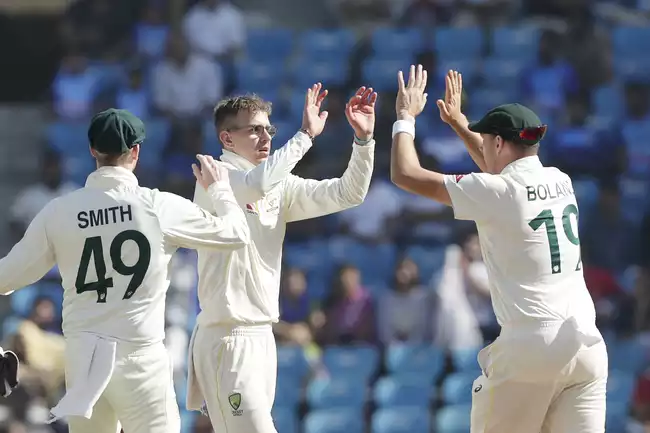

<swiper [effect]="'cards'" [grabCursor]="true" direction="vertical">
  <ng-template swiperSlide *ngFor="let item of [1,2,3,4,5,6,7,8,9]">
    <ion-content>
   <ion-header translucent *ngIf="show">
    <ion-toolbar>
      <ion-title>
        News
      </ion-title>
    </ion-toolbar>
   </ion-header>
   <ion-content [fullscreen]="true">
    
    <ion-card>
      <ion-card-header>
        <ion-card-title>
          india vs Austrelia
        </ion-card-title>
      </ion-card-header>
      <ion-card-content (click)="hide()">
        STAT: Biggest innings wins for India vs Australia
Inngs & 219 runs Kolkata 1997/98
Inngs & 135 runs Hyderabad 2012/13
Inngs & 132 runs Nagpur 2022/23 *
That is all from this first Test at Nagpur. Australia have been beaten, battered and blown away. Do they have it in them to come back with a better effort in Delhi? So much hype coming into this series, and the opener has gone the way most matches usually go in India, with India's spinners making them dance to their tunes on a pitch where Nathan Lyon was found a bit wanting with figures of 1/126. Todd Murphy's performance will give them some heart though. We'll see you again in six days time, with two extra days off for everyone involved. For now, it's goodbye from Sagar Chawla on behalf of Siva, MS Ramakrishnan and Abhinand Raghavendran.

      </ion-card-content>
    </ion-card>
    <p>
      <ion-text class="ion-margin-start" color="medium">
        Short by : kpkd cricket
      </ion-text>
    </p>
   </ion-content>
  </ion-content>
  <ion-toolbar class="tabs" *ngIf="show">
  <ion-tabs>
    <!-- tabs -->
  <ion-tab-bar slot="bottom">
   <ion-tab-button (click)="share()">
    <ion-icon name="newspaper-outline"></ion-icon>
    <ion-label>
      Relevance
    </ion-label>
   </ion-tab-button>

   <ion-tab-button (click)="share()">
    <ion-icon name="share-outline"></ion-icon>
    <ion-label>
      Share
    </ion-label>
   </ion-tab-button>

   <ion-tab-button (click)="share()">
    <ion-icon name="bookmark-outline"></ion-icon>
    <ion-label>
     Save
    </ion-label>
   </ion-tab-button>
  </ion-tab-bar>
  </ion-tabs>
</ion-toolbar>
</ng-template>
</swiper>